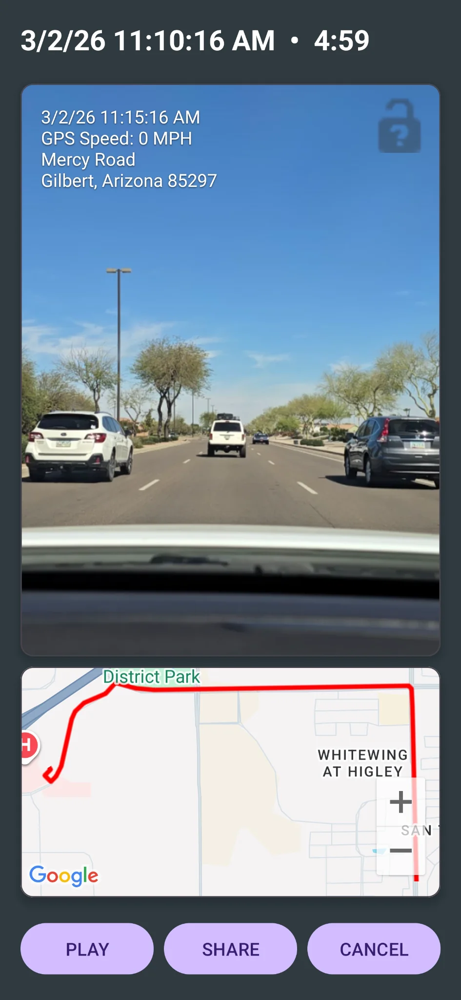
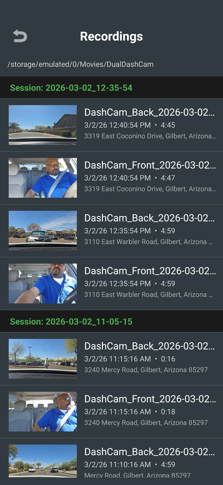
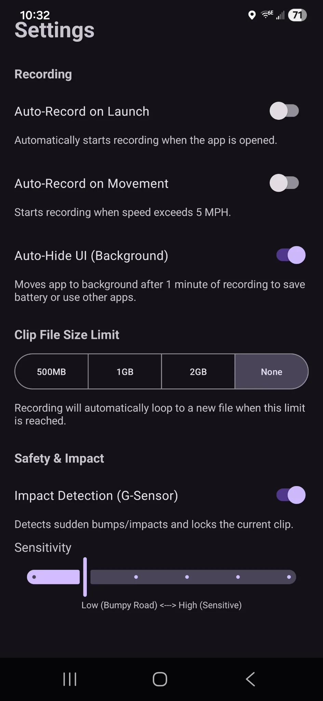

01 / BOTH PERSPECTIVES
One trip.
Both sides of the story.
Capture the road ahead and the cabin interior when your device supports dual-camera operation.
ROAD AHEAD↑
CABIN VIEW
YOUR DRIVE. DOCUMENTED.
Turn your phone into a dash cam for rideshare driving. Capture road and cabin video, review trip details, and keep important moments close.
For Android & iOS · Dual-camera capture on supported devices

ACTUAL APP SCREEN · PLAYBACK VIEW
MORE CONTEXT. LESS GUESSWORK.
From an unexpected road event to a passenger dispute, Guardian helps you keep a record of your drive.
01 / BOTH PERSPECTIVES
Capture the road ahead and the cabin interior when your device supports dual-camera operation.
02 / THE BIGGER PICTURE
Speed, date, time, street information, and location-based trip details add context to your recordings.
03 / IMPORTANT MOMENTS
Impact detection helps lock important moments so they are easier to locate after an incident.
04 / ROOM FOR THE ROAD
Loop recording and automatic cleanup help manage device storage during long drives.
05 / YOU’RE IN CONTROL
Recordings and trip data stay on your device unless you choose to share them. Send an important clip when it’s needed.
Our privacy approachA CLOSER LOOK
Explore real screens from Guardian. Select a step to take a look inside.
Actual app screenshots. Features and appearance may vary by device and platform.
PLAYBACK & ROUTE DETAILS

ORGANIZED RECORDING SESSIONS

RECORDING & IMPACT SETTINGS
Dual-camera operation depends on your device’s capabilities. Check the app listing for your platform and confirm that your device supports the recording mode you want to use.
Recordings and trip data stay on your device unless you choose to share them. Read the privacy policy for details.
Yes. Use the app’s sharing controls to send important recordings to an insurance agent, law enforcement, or a trusted contact when needed.
Dual-camera recording, optional audio, GPS, and trip overlays can increase device temperature. Keep your phone out of direct sunlight when possible and consider directing an air-conditioning vent toward it during long drives.
Review our permissions page for details about camera, microphone, location, and other app permissions.
READY FOR YOUR NEXT DRIVE
The phone you already carry. A better-documented journey.
See each store listing for pricing and device compatibility.